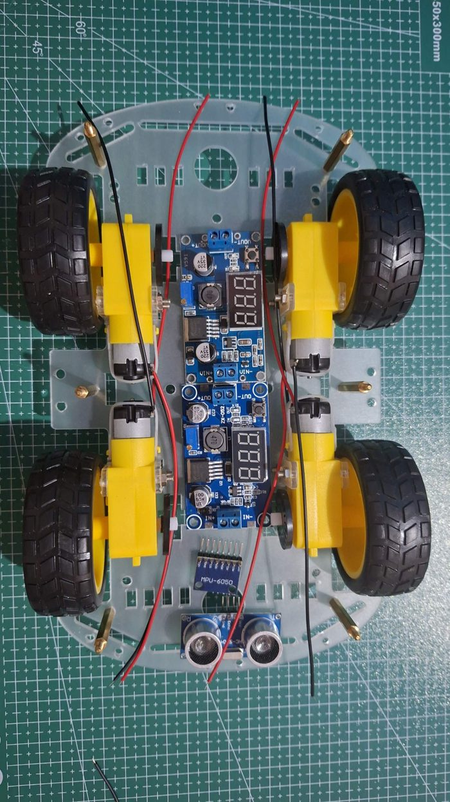
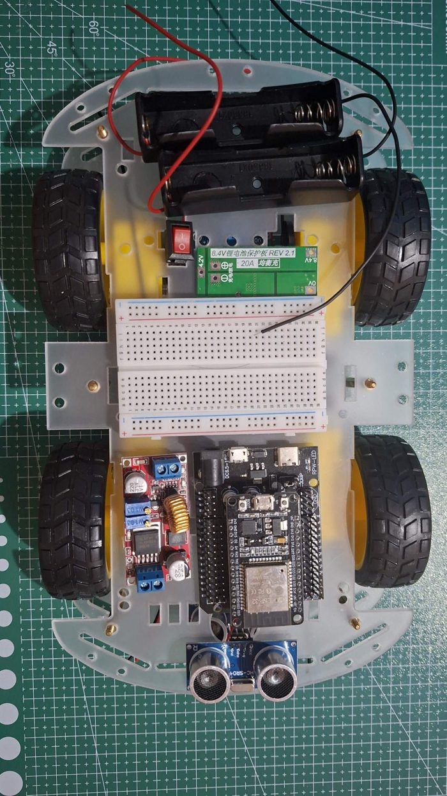
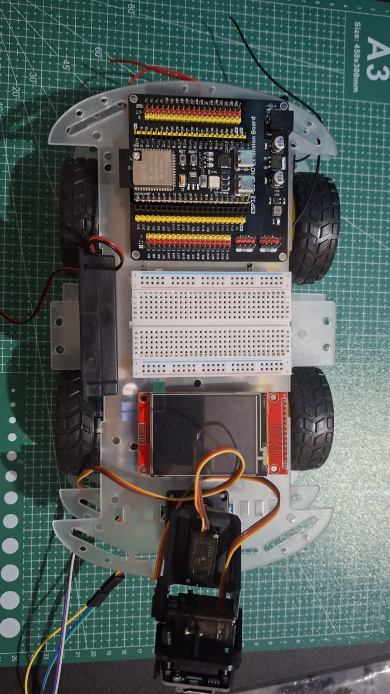

Semua bagian sudah lulus tes di meja. Sekarang dipasang di chassis, dipindah ke baterai, lalu diuji di lantai dengan tangan selalu dekat tombol STOP.
0 / 0 langkah
Langkah
Rakit dan uji akhir
Tahap 1
Susun kering dan cek
Semua bagian yang sudah dites di Bagian 1-5Plat chassis ketiga12 spacer kuningan M3 30+6 mm (6 kaki x 2)Penggaris
Seberapa yakin ini muat
Gambar di bawah berskala. Bentuk plat dibaca dari fotomu dengan kotak cutting mat sebagai penggaris (galat sekitar 1-2 mm), dan posisi motor serta barang diukur dari tiga foto susun keringmu (galat beberapa mm). Hasil hitungan: lantai 1 terisi 39%, lantai 2 62%, lantai 3 73% dari luas yang bisa dipakai, dengan jarak antar-barang minimal 3 mm dan tidak ada yang bertumpuk. Satu-satunya yang keluar dari tepi plat adalah speaker di lantai 3 (sekitar 8 mm), dan itu disengaja karena lebar robot tetap ditentukan roda. Yang belum terlihat dari foto atas: tinggi tiap lantai, karena itu ada langkah cek tinggi.
Geser gambar ke samping untuk melihat semuanya.
Tiga lantai dilihat dari atas, depan robot di kanan, kiri robot di atas gambar. Ketiga lantai memakai plat chassis yang sama.
Lantai
Ruang tinggi
Barang tertinggi
Sisa
1 (antara plat bawah dan atas)
30 mm (spacer kit)
TB6612 + kabel, sekitar 25 mm
± 5 mm
2 (antara plat atas dan lantai 3)
60 mm (2 spacer 30 mm bertumpuk)
DevKit di papan 30P + kabel tegak, sekitar 45 mm
± 15 mm
3 (paling atas)
tanpa batas
kepala pan-tilt + kamera, sekitar 70 mm
-
No
Kabel 22 AWG
Potong
Dari → ke
7
merah
16 cm
kaki saklar yang lain → WAGO + (lantai 1)
8
hitam
16 cm
pad ⊖ (P−) BMS → WAGO − (lantai 1)
9
merah
15 cm
WAGO + → IN+ LM2596 #1
10
hitam
15 cm
WAGO − → IN− LM2596 #1
11
merah
26 cm
WAGO + → IN+ XL4015 (naik ke lantai 2)
12
hitam
21 cm
WAGO − → IN− XL4015 (naik ke lantai 2)
13
merah
16 cm
WAGO + → IN+ LM2596 #2
14
hitam
16 cm
WAGO − → IN− LM2596 #2
15
hijau
15 cm
OUT+ XL4015 → WAGO 6V (turun ke lantai 1)
16
hitam
10 cm
OUT− XL4015 → WAGO −6 (turun ke lantai 1)
17
hijau
10 cm
WAGO 6V → VM TB6612
18
hitam
10 cm
WAGO −6 → GND (sebelah VM) TB6612
19
hijau
26 cm
WAGO 6V → kepala (merah kedua servo)
Total
merah 73 cm, hitam 88 cm, hijau 51 cm
ketiga warna cukup dari 1 m (sisa hitam sekitar 12 cm, jadi potong yang terpanjang dulu)
Perkiraan dari tata letak di atas: jarak mendatar + naik-turun antar-lantai (permukaan lantai 2 sekitar 3,3 cm di atas lantai 1, lantai 3 sekitar 6,3 cm di atas lantai 2), ditambah 3 cm untuk kupasan dan kelonggaran, galat sekitar ±2 cm. Kabel antar-lantai dihitung lewat lubang plat yang ada di peta tiap tahap. Angka yang sama dipakai di tiap langkah Bagian 1-4.
kabel bawaan holder (merah holder 1 + hitam holder 2)
6 cm
titik tengah: holder 1 (+) disambung langsung ke holder 2 (−)
2
kabel bawaan holder 2 (merah)
7 cm
holder 2 (+) → pad 8.4V BMS
3
kabel bawaan holder 1 (hitam)
10 cm
holder 1 (−) → pad 0V BMS
5
merah (kabel dudukan sekring)
8 cm
pad ⊕ (P+) BMS → ujung 1 dudukan sekring
6
merah (kabel dudukan sekring)
6 cm
ujung 2 dudukan sekring → saklar
25
kabel bawaan motor belakang
19 cm
motor belakang → AO / BO TB6612
26
kabel bawaan motor depan
6 cm
motor depan → disambung ke kabel motor belakang yang lewat
Jalur 5 V cukup 26 AWG: arusnya paling besar sekitar 1 A, dan 25 cm pergi-pulang hanya menurunkan sekitar 0,07 V. Kabel jumper biasanya 20 cm; yang tertulis 20 cm ke atas pas-pasan, jadi sambung dengan kabel M-F kalau kurang.

Susun kering lantai 1 (depan di bawah). HC-SR04 di foto ini masih di depan; pindahkan ke ujung belakang.

Lantai 2 (depan di bawah, jadi kiri robot di kanan foto). Holder 2 dan XL4015 nanti diputar 180°.

Lantai 3: S3, breadboard 2, speaker, TFT rebah, kepala. Kepala di foto masih rebah; nanti berdiri dan dibaut ke plat.
Kenapa begitu? Lantai 1 hanya setinggi 30 mm, jadi diisi barang rendah yang jarang disentuh: konverter dan sambungan daya. DevKit dan papan S3 butuh ruang tinggi untuk kabel jumper yang berdiri, jadi naik ke lantai 2 dan 3. Breadboard besar diganti dua breadboard 400 lubang, satu per board, supaya kabel tiap board pendek.
Berhasil kalau
Semua barang punya tempat, tidak ada yang menyentuh plat di atasnya, sel bisa dicabut, dan semua kabel yang sudah dipotong sampai ke ujungnya.
Tahap 2
Pasang lantai 1
Plat bawah dengan motorKit spacer nilon M3 (6 mm)Cable ties 3 x 100 mmSelotip kertas + spidolBor 3 mm (kalau perlu)
Geser gambar ke samping untuk melihat semuanya.
Dilihat dari atas, posisi barang sama persis dengan di robot (gambar tata letak Bagian 6). Nomor di gambar = nomor di tabel dan di langkah.
Dilihat dari atas, posisi barang sama persis dengan di robot (gambar tata letak Bagian 6). Nomor di gambar = nomor di tabel dan di langkah.
No
Kabel
Panjang
Dari → ke
19
hijau 22 AWG
26 cm
WAGO 6V → kepala (merah kedua servo)
20
hitam 26 AWG
19 cm
WAGO −6 → kepala (coklat kedua servo)
22
merah + hitam 26 AWG
24 cm
OUT LM2596 #1 → blok daya papan S3 (5V dan GND)
23
merah + hitam 26 AWG
31 cm
OUT LM2596 #2 → pin 5V dan GND ESP32-CAM
28
2 kabel 26 AWG
19 cm
tombol STOP 12 mm → kolom 27 dan 29 breadboard 1
29
3 kabel F-F
26 cm
UART: papan 30P (D16, D17, G) → papan S3 (IO17, IO18, G)
Berhasil kalau
Lantai 3 terpasang dan kepala bisa bergerak penuh tanpa menarik kabel.
Tahap 5
Rapikan kabel
Cable tiesSelotip kertas + spidol
Berhasil kalau
Robot bisa diangkat dan digoyang pelan tanpa ada kabel jumper yang lepas.
Tahap 6
Pindah ke mode jalan
Multimeter
Berhasil kalau
Robot menyala penuh dari baterai tanpa kabel USB.
Kalau tidak berhasil
Layar berkedip atau S3 restart saat speaker berbunyi keras: 5 V turun. Kecilkan volume, pastikan LM2596 #1 tidak memasok kamera, atau pasang kapasitor 470 µF di pin 5V papan S3.
Bot menyapa tapi "badan belum terhubung": DevKit tidak mendapat 5 V (cek kabel ke blok daya 30P) atau kabel UART lepas saat dirakit.
Tahap 7
Uji pertama di lantai
Ruang kosong 2x2 mBaterai penuhHP dengan Telegram
Kenapa begitu? Sensor ultrasonik punya sudut pandang sempit (sekitar 15°) dan tidak melihat benda tipis (kaki kursi) atau benda lembut. Robot ini aman untuk ruang tamu, tapi jangan dibiarkan berjalan sendiri dekat tangga: tidak ada sensor yang melihat lantai hilang.
Berhasil kalau
Robot bergerak sesuai perintah, berhenti sendiri di depan halangan, dan tombol STOP selalu menang.
Tahap 8
Penyesuaian
Laptop
Berhasil kalau
Robot terasa pas untuk ruanganmu.
Bantuan
Kalau ada yang tidak jalan
Gejala
Penyebab paling mungkin
Coba
Robot mati sendiri saat motor mulai bergerak
baterai lemah, atau BMS memutus karena lonjakan arus
isi baterai; cek sekring; kecepatan awal lebih rendah
ESP32 restart acak saat motor jalan
noise motor, GND kurang baik
kapasitor 100 nF di tiap motor, 470 µF di VM, satukan GND di satu titik
Satu sisi roda tidak berputar
kabel motor lepas, atau kanal TB6612 tidak dapat sinyal
Bagian 2 Tahap 3 dengan tes_motor
Robot selalu berbelok saat maju
motor TT tidak sama kuat
normal; kurangi kecepatan sisi yang lebih kuat di perintah
Selalu "E DITOLAK" padahal tidak ada halangan
sensor depan melihat lantai atau bodi robot
pasang HC-SR04 lebih tinggi dan lurus
Layar putih setelah dirakit
kabel SPI atau CS lepas
Bagian 3 Tahap 2
Foto gagal
IP kamera berubah, kamera kurang daya
DHCP reservation di router; kapasitor 1000 µF
AI tidak menjawab (kode 401/400/429)
kunci salah / saldo habis / terlalu sering
cek di platform.claude.com
Robot tidak bersuara
volume 0, Vin MAX98357A lepas, Google TTS menolak
/volume 15; tes_speaker; jawaban tetap ada di Telegram
Sentuhan meleset
kalibrasi lama
sentuh layar saat S3 menyala untuk kalibrasi ulang
BMS tidak mengeluarkan daya setelah sekring putus atau korsleting
proteksi terkunci
lepas kedua sel, tunggu, pasang lagi dengan urutan 0V → 4.2V → 8.4V
Masih bingung? Foto rangkaianmu dari atas dengan cahaya terang, tulis bagian dan tahap berapa, dan apa yang muncul di Serial Monitor.
Perawatan
Merawat baterai dan robot
Matikan saklar setelah dipakai. BMS tetap menarik arus kecil; jangan simpan berminggu-minggu dengan sel di holder.
Isi baterai kalau robot mengirim peringatan baterai lemah (6,4 V total). Jangan pernah membiarkan sel di bawah 3,0 V.
Sel yang panas saat diisi, menggembung, atau berbau: hentikan, taruh di tempat aman, jangan dipakai lagi.
Sesekali kencangkan baut motor dan terminal sekrup, getaran membuatnya kendur.
Ide berikutnya: encoder roda (code wheel dari kit chassis) untuk jarak tempuh yang tepat, sensor garis untuk mengikuti jalur, atau sensor jurang di bawah depan.